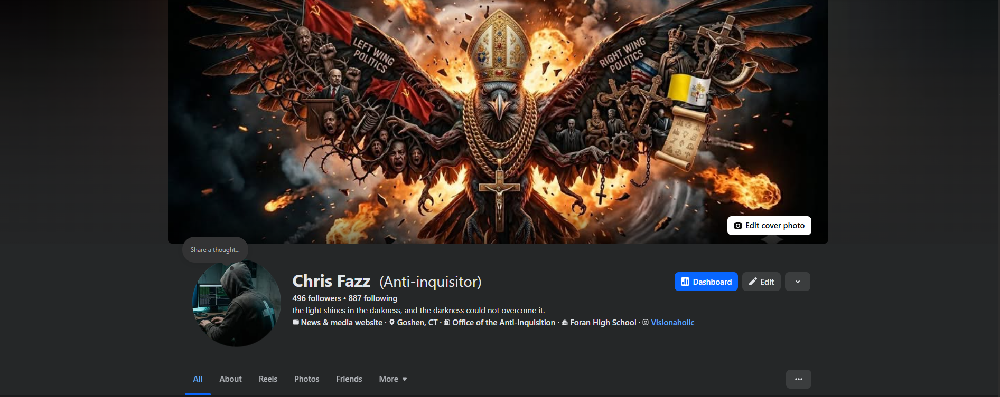

Chris Fazzino's Research Projects
Research Documentation and Articles
The Medici, Marsilio Ficino, and the Neo-Platonic Renaissance: A Symbiotic Relationship
1. The Historical Catalyst: Cosimo de' Medici and the Council of Florence
The relationship began in 1438–1439 during the Council of Florence, a grand ecclesiastical summit intended to reunite the Western Roman and Eastern Byzantine Churches. Cosimo de' Medici, the wealthiest banker in Europe and de facto ruler of Florence, was deeply captivated by the lectures of the Byzantine philosopher Gemistus Plethon. Plethon introduced Florentine scholars to the writings of Plato, which had been largely lost or inaccessible in Western Europe for centuries. Inspired by Plethon's vision of a revived Platonic academy, Cosimo sought to make Florence the intellectual capital of the Western world.
2. Marsilio Ficino: The Scholar and Intellectual Engine
To realize his ambition, Cosimo selected Marsilio Ficino (1433–1499), a brilliant young Florentine scholar, physician, and ordained priest. In 1462, Cosimo granted Ficino a villa at Careggi outside Florence, along with a library of priceless original Greek manuscripts. Ficino was tasked with translating the complete works of Plato into Latin for the first time in history, as well as the Corpus Hermeticum and the works of late-antique Neo-Platonists such as Plotinus, Porphyry, and Proclus.
Ficino became the leader of what was informally called the "Florentine Academy" (or Platonic Academy), an informal gathering of poets, artists, statesmen, and humanists who met at Villa Careggi to debate philosophy, celebrate Plato's birthday, and develop a new philosophical worldview.
3. What is Renaissance Neo-Platonism?
Neo-Platonism was a metaphysical system originating in the 3rd century AD with Plotinus, which modified Plato's ideal forms into a grand cosmic hierarchy. Ficino adapted Neo-Platonism into a Christian framework in his masterpiece, Theologia Platonica (Platonic Theology). In Ficino's cosmic vision, reality emanates downwards from "The One" (God) through Angelic Mind, the Immortal Soul, Nature, and Matter.
Crucially, Ficino placed the human soul directly at the center of the universe as the node connecting the spiritual and material realms. He popularized the concept of Amor Platonicus (Platonic Love), teaching that physical beauty in the world is a divine reflection. When humans experience love and appreciate aesthetic beauty, their souls are drawn upward back to divine unity with God.
4. The Symbiotic Dynamic: How the Three Elements Realigned Europe
The relationship between the Medici, Ficino, and Neo-Platonism was deeply mutually beneficial across three generations of Medici patronage—Cosimo, his son Piero, and his grandson Lorenzo the Magnificent.
Financial & Political Power (The Medici): Provided the funds, manuscript acquisitions, security, and diplomatic prestige needed for scholarly work without fear of Inquisition persecution. Supporting Neo-Platonism framed Medici rule as enlightened, divine, and harmonious rather than tyrannical.
Intellectual Synthesis (Ficino): Provided the theological and philosophical justification that reconciled pagan Greek philosophy with orthodox Christian faith, asserting that Plato was a precursor to Christ ("pia philosophia").
Cultural Ideology (Neo-Platonism): Supplied the intellectual framework that inspired Renaissance art, literature, and humanistic dignity, replacing rigid medieval Scholasticism with a dynamic doctrine of human spiritual potential.
5. Artistic and Cultural Legacy
Ficino's Neo-Platonic philosophy directly transformed Renaissance art. Under Lorenzo de' Medici's court, painters like Sandro Botticelli created masterpieces such as The Birth of Venus and Primavera, which encoded Neo-Platonic allegories of divine love and spiritual rebirth using classical myth. Young artists raised in the Medici circle, including Michelangelo, absorbed Ficino's teachings on the divine spark within the human body, shaping the heroic humanism of the High Renaissance.

Chris Fazz Facebook
My Facebook page where I post various research and content related to my research and Ministry.
FacebookChris Fazzino's Youtube
My Youtube channel where I post various research and content related to my research and Ministry.
Youtube